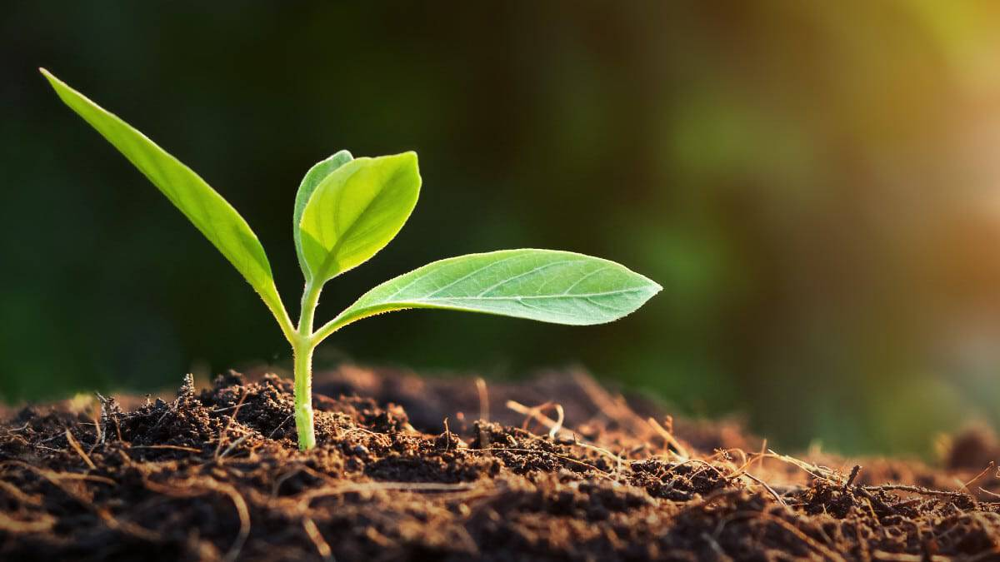

🌍 A Terra: O Equilíbrio Raro
A Terra é, até onde sabemos, o único planeta capaz de sustentar vida de forma complexa e contínua. Isso não acontece por acaso, mas por uma combinação extremamente específica de fatores. Sua distância em relação ao Sol permite a existência de água em estado líquido — um dos elementos mais importantes para a vida. Além disso, sua atmosfera rica em nitrogênio e oxigênio cria uma camada protetora que regula a temperatura e filtra radiações perigosas.
Outro ponto essencial é o campo magnético terrestre, que atua como um escudo invisível contra partículas solares altamente energéticas. Sem ele, a atmosfera poderia ser lentamente destruída, como ocorreu em Marte. A presença de placas tectônicas também desempenha um papel fundamental, reciclando nutrientes e mantendo o equilíbrio climático ao longo de milhões de anos.
A Terra não é comum — ela é uma exceção
Quando analisamos esses fatores em conjunto, fica claro que a Terra não é apenas habitável — ela é resultado de um equilíbrio delicado, difícil de replicar. Isso levanta uma questão inevitável: quantos outros planetas no universo conseguiram atingir esse mesmo nível de estabilidade?

🌱 Um Planeta Vivo em Constante Transformação
Diferente da maioria dos planetas do sistema solar, a Terra não é estática. Ela está em constante mudança, tanto na superfície quanto em seu interior. Vulcões, terremotos e movimentos das placas tectônicas mostram que o planeta ainda é geologicamente ativo. Esses processos, apesar de muitas vezes destrutivos, são essenciais para a renovação da superfície e para a manutenção das condições que permitem a vida.
Além disso, a Terra abriga uma biodiversidade extremamente complexa. Milhões de espécies interagem em sistemas ecológicos interdependentes, criando um ambiente dinâmico e resiliente. Esse equilíbrio, no entanto, não é garantido. Pequenas alterações podem gerar impactos significativos, o que torna a estabilidade do planeta algo mais frágil do que parece.
Um sistema em equilíbrio entre ordem e caos
Comparada a gigantes gasosos como Júpiter ou ambientes extremos como Vênus, a Terra se destaca não pela força ou tamanho, mas pela sua capacidade de sustentar e adaptar a vida. Isso transforma o planeta em algo mais do que um corpo celeste — ele é um sistema vivo, em equilíbrio contínuo entre ordem e caos.